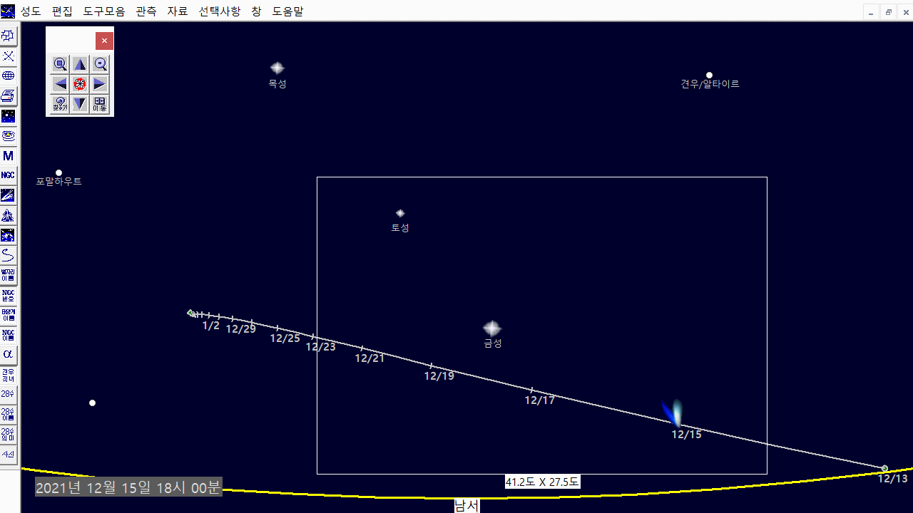
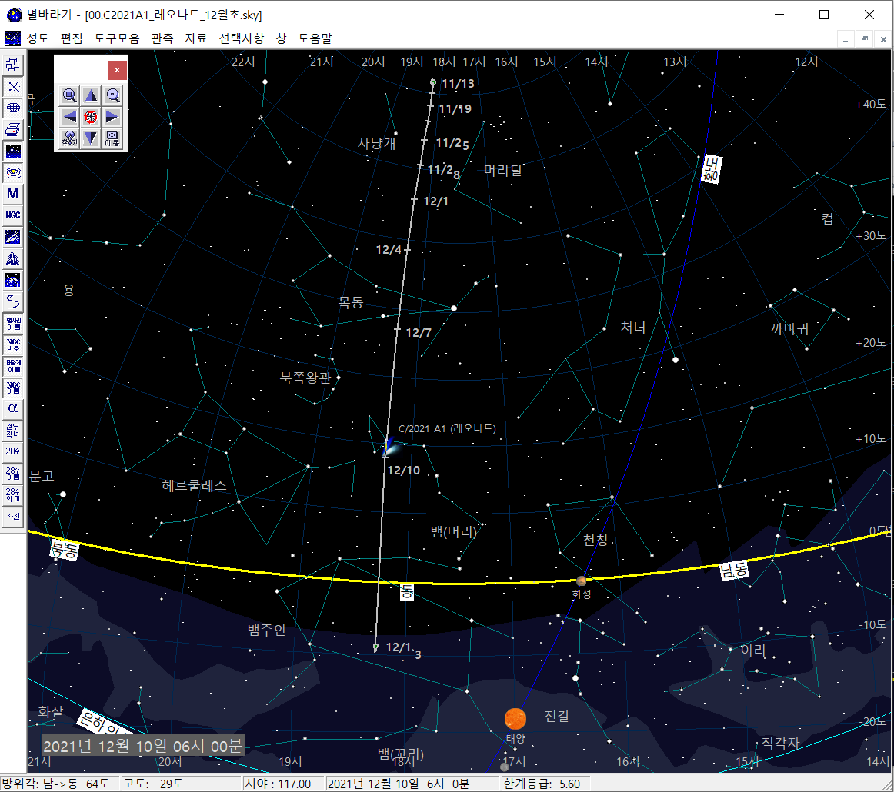
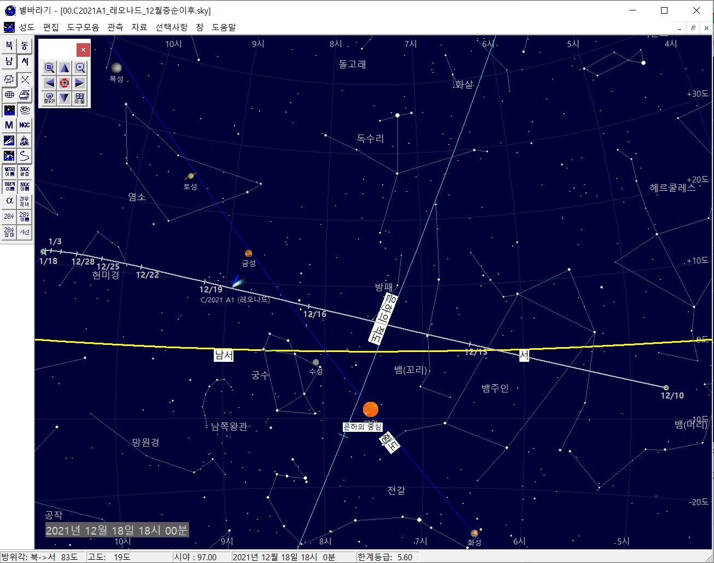
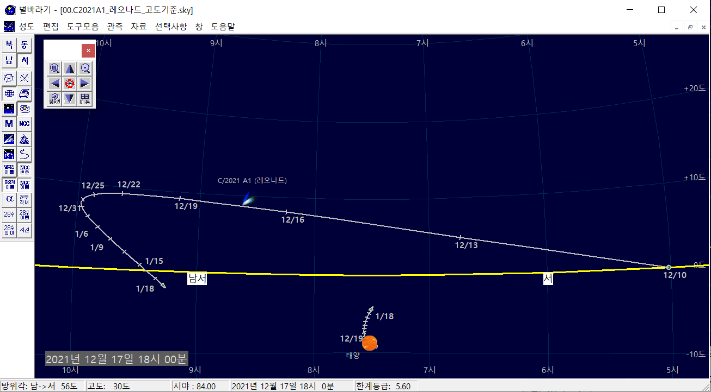
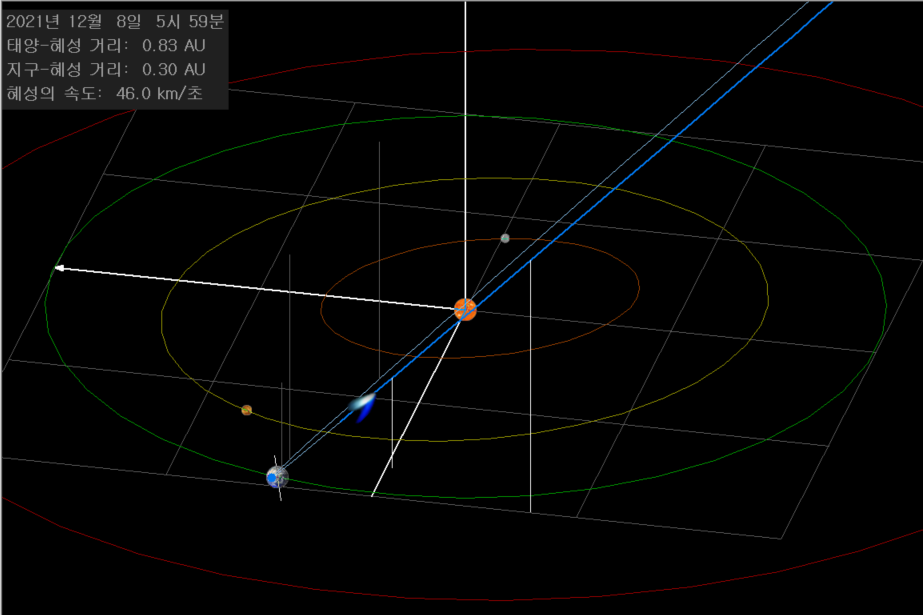
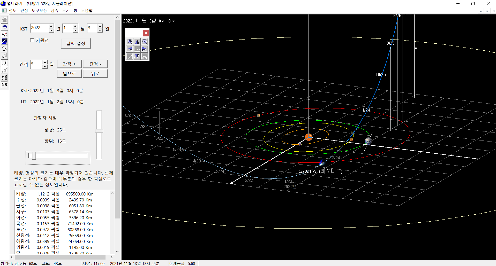

C/2021 A1 레너드 혜성
12월 중순 이후 저녁 18시 기준 혜성의 위치이다. 금성을 기준으로 혜성을 찾을 수 있다.
- 맨눈 관측은 어려우며 쌍안경을 준비해야 한다.
- 카메라 또는 스마트폰에서 10초 이상 노출을 해야 보일 것으로 예상된다.
- 아래 그림의 흰색 사각형은 풀프레임 50mm 렌즈의 화각이다.
- 스마트폰의 화각은 흰색 사각형의 약 1.8배이다.

2021년 가장 밝은 혜성이 될 것으로 기대되는 레너드 혜성은 미국 아리조나 레몬산 천문대의
그렉 레너드가 2021년 1월 3일 발견하였다. 공교롭게도 혜성의 근일점은 정확히 1년 뒤인 2022년 1월 3일이다.
먼저 아래 동영상을 보며 레너드 혜성의 궤도에 대해 이해해 보자.
용맹한 혜성 레너드와 지구, 금성의 삼각관계
레너드 혜성을 찾아 보자!
여러 조건이 잘 맞으면 12월 10~13일 사이에 최대 2.5~4등급으로 밝아질 수 있다고 한다.
혜성의 등급은 어떻게 될지 예측이 어렵고 관측 적기를 예상하기도 어렵다.
어쨋든 밝은 대혜성이 되기를 태양과 혜성에 기도하며, 12월 초부터 꾸준히 혜성을 관측해 보자.
- 11월~12월 초: 새벽에 관측 가능하다. 11월 말에는 광해가 없는 곳에서 소형망원경으로, 12월 초에는 쌍안경으로도 관측 가능할 것으로 예상된다.
- 12월 8일 전후: 12월 8일 지구가 혜성의 공전면을 지나며, 우리의 시선 방향으로 혜성의 꼬리가 더 많이 겹쳐 보기때문에
혜성이 더 밝게 보일 수 있다. (아래 네 번째 그림 참조)
- 12월 12일 전후: 12일 혜성은 지구에 가장 가까이 접근하고, 혜성의 절대 등급도 더 높아진 상태이다.
태양에 충분히 접근하지 못한 것이 아쉽기는 하지만, 혜성의 관측 고도가 높은 것은 장점이다.
북반구에서는 12월 7일 ~ 13일 사이가 까만 하늘을 배경으로 혜성을 관측할 수 있는 좋은 기회이다.
| 12월 중순까지의 (새벽) |
12월 중순 이후 (저녁) |
|

|

|
| 12월 중순 이후 고도 변화 |
12월 8일 혜성 공전면 통과 |
|

|

|
- 12월 중순: 12월 중순부터는 저녁에도 관측이 가능하다. 태양과도 점점 가까와지므로 혜성의 절대 등급도 더 밝아진다.
단점으로는 태양과 혜성의 고도차가 너무 적어 관측이 만만치 않다.
다만, 혜성 꼬리의 먼지들이 태양빛을 잘 산란시켜 주고 여러 조건이 맞는다면, 일몰 직후 밝은 하늘에서도 혜성을 볼 수 있는 가능성이 있다.
낮에 구름이 보이듯이 혜성이 태양빛을 산란시켜 빛 날 수 있다.
- 12월 22~1월 3일: 1월 3일 근일점까지 태양에 가까이 접근하며 절대 등급도 밝아진다.
고도는 조금씩 높아지지만 태양과의 고도차는 15도 정도로 관측 조건은 좋지 않다. (두 번쩨, 세 번째 그림 참조).
남서쪽이 트인 관측 장소를 찾아야 하며, 초저녁 엷은 빛이 남아 있는 하늘에서 혜성을 찾아야 한다.
- 아니면 남반구를 찾아 가는 것도 좋은 방법이다. 남반구에서는 어쩌면 맨눈으로 혜성이 보일 수도 있다.
- 1월 3일 이후: 무엇보다 태양과의 고도차가 너무 적다. 더욱이 태양에서 멀어지면서 밝기도 점점 더 어두워진다.
혜성의 공전 속도가 매우 빨라 우리와의 만남 시간은 더욱 짧아진다.
혜성의 3차원 궤도
12월 12일에 지구에 가장 가까이 접근하며 (근지점),
12월 18일엔 금성에 가장 가까이 접근하고,
2022년 1월 3일 태양에 가장 가깡이 접근한다 (근일점).
혜성의 특이점으로 태양 기준 최대 50 km/s의 매우 빠른 속도이다. 빠른 속도에도 불구하고 우리가 눈의로 관측할 때 혜성의 이동 모습을 느낄 수는 없다.^^
매일 매일 조금씩 위치를 바꾸어 가는 모습을 볼 수 있다. 참고로 지구의 공전속도는 약 30 km/s로 태양계 행성 중에서는 빠른 편이지만,
레너드 혜성에 비할바는 아니다.
혜성 궤도의 진한 파란색은 황도면 위를, 엷은 파란색은 황도면 아래를 가리킨다.

레너드 혜성 궤도의 특이점
혜성 발견 당시에는 주기혜성으로 게산되었으나, 최근에는 포물선 또는 쌍곡선 궤적을 그리며 태양계를 떠나는 것으로 바뀌었다.
아직 정확한 해석을 찾지 못했고 두 가지 정도 해석이 가능해 보인다.
- 지금까지는 주기 혜성이었으나, 이번에 태양을 방문하면서 궤도가 바뀐 것이다. 이 경우, 혜성은 태양을 벗어나 다른 별을 향해 성간 (인터스텔라) 여행을 시작하게 된다.
- 처음부터 포물선 궤적이었다. 즉, 이번이 처음이자 마지막으로 태양을 방문하는 것이다.
태양으로 접근하기 시작한지 4만년의 시간 중 우리가 관측한 1~2년의 데이터로 정확한 궤도를 구하기 어려운 것은 당연한 것입니다.
어쨌든 NASA에서 궤도를 바꾼 이유는 궁금하다. 참고 사이트: NASA JPL
혜성 이름의 의미
혜성의 이름 C/2021 A1 (레너드 )은 국제천문연맹(IAU)에서 공식적으로 명명한 것으로 다음과 같은 의미가 있다.
- 레너드: 혜성의 이름은 발견자 또는 연구 프로젝트의 이름으로 하며, 이 혜성은 미국 아리조나 Mount Lemmon 천문대의
Greg Leonard가 2021년 1월 3일 발견하였다.
- C: 혜성의 특성 구분자로 주기가 확인되지 않은 혜성을 의미한다. 아래 보충 설명 참조.
- 2021: 2021년에 발견되었다.
- A: 발견된 날짜가 1월 1~15일 사이다. 1월부터 한 달을 2등분하여 A~Y로 구분한다. 영문자 I는 숫자 1과 혼동되어 사용하지 않는다.
- 1: 1월 1~15일 사이에 발견된 첫 번째 혜성이다.
혜성의 특성 구분자
- P: 주기혜성 (Periodic Comet)을 가리킨다. 주기 200년 미만이거나 두 번 이상 근일점을 지난 기록이 있는 혜성은 P (Periodic Comet)로 구분한다.
- C: 주기가 확인되지 않은 (Non-periodic Comet) 혜성으로 P 유형 이외의 혜성을 가리킨다.
- D: 사라지거나 (Disappeared) 쪼개지거나 잃어버린 혜성을 가리킨다. 예를 들어, 1990년대 목성과 부딪힌 슈메이커-레비 D/1993 F2 혜성이 있다.
- X: 믿을만한 궤도를 계산할 수 없는 혜성을 가리키며, 대부분 역사속의 혜성이다.
별바라기 및 혜성 자료 다운로드 안내
교육용 천문 소프트웨어 별바라기에서 레너드 혜성의 위치를 확인할 수 있습니다.
이미 별바라기를 다운 받으신 분들은 아래 파일을 다운 받아서 Data/comet.txt 파일을 덮어씁니다.
이후 혜성 다이로그를 열면, 혜성 목록의 맨 윗줄에 레너드 혜성을 볼 수 있다.
글을 마치며
이 글을 읽는 분들의 혜성과 태양계에 대한 이해에 도움이 되었기를 바랍니다.
또한 별을 사랑하는 분이면 누구나 자유롭게 별바라기를 활용하여 컨텐츠를 만들어도 괜찮습니다.
아래 메일 주소로 별바라기를 활욯한다고 알려 주시기만 하면 됩니다.
12월에는 여러분들 모두에게 혜성 빛이 가득하기를 기도합니다. 감사합니다.
별바라기 홈 최종 변경: 2021년 11월 19일